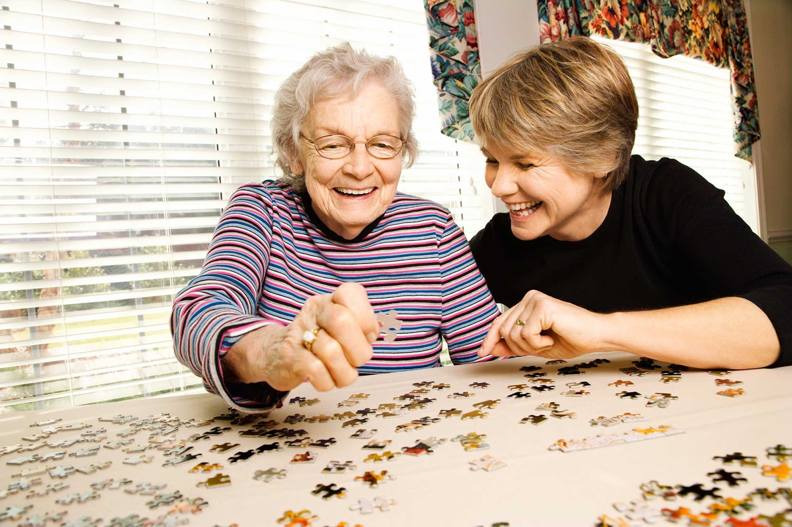

Estimulação Cognitiva para Idosos
De acordo com a Organização Mundial da Saúde, até o ano de 2025, o número de pessoas idosas no mundo será...
Crenças dos Jovens Frente aos Papéis de Adulto
Sendo a transição para a vida adulta caracterizada como uma idade de possibilidades, mas também como de...

Arteterapia como instrumento psicoterapêutico
O homem expressa suas emoções por meio da arte desde o início da humanidade, seja ela plástica, visual, sonora ou dramática...